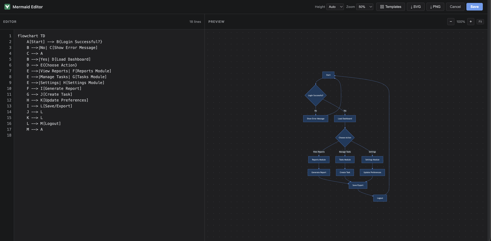
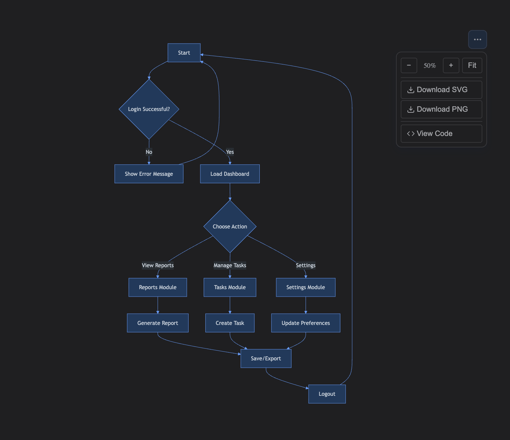

How to Use
- Type
/Mermaidin the Confluence editor - A fullscreen editor opens with a code panel (left) and live preview (right)
- Write your Mermaid syntax (e.g.,
graph TD; A-->B; B-->C;) - See the diagram update in real-time as you type
- Click Save — the diagram renders on the published page
Sample Script
flowchart TD
A[Start] --> B{Login Successful?}
B -->|No| C[Show Error Message]
C --> A
B -->|Yes| D[Load Dashboard]
D --> E{Choose Action}
E -->|View Reports| F[Reports Module]
E -->|Manage Tasks| G[Tasks Module]
E -->|Settings| H[Settings Module]
F --> I[Generate Report]
G --> J[Create Task]
H --> K[Update Preferences]
I --> L[Save/Export]
J --> L
K --> L
L --> M[Logout]
M --> AEditor — live preview as you type

Published page

Supported Diagram Types
- Flowcharts
- Sequence Diagrams
- Gantt Charts
- Class Diagrams
- State Diagrams
- Pie Charts
- ER Diagrams
- Git Graphs
Pro Features PRO
The following features are available exclusively in the Pro version:
Export as SVG / PNG
Download your diagrams as high-resolution SVG or 2× PNG files. Available both in the editor toolbar and on the published page (hover to reveal export buttons).
Zoom Controls
Interactive zoom on the published diagram — use the +/− buttons or Ctrl/⌘ + Scroll to zoom in/out. Set a default zoom level (50%–200%) in the editor that persists on the page.
Code Split View & Copy
On the published page, click the </> Code button to open a split panel showing the raw Mermaid source with a one-click copy button.
Diagram Templates
8 built-in templates (Flowchart, Sequence, Class, State, Gantt, Pie, ER, Git Graph) — insert with one click from the editor toolbar.
Configurable Container Height
Set the minimum container height (Auto, 100px–600px) to control how the diagram fits on the page. Default is Auto (fits content exactly).
Dark Mode Support
Diagrams automatically adapt to Confluence's light/dark theme — text, lines, and backgrounds adjust for readability in both modes.
Using via MCP (Model Context Protocol)
Programmatically insert or update Mermaid diagrams via MCP using the Confluence storage format.
Macro Config Schema
| Field | Type | Description | Default |
|---|---|---|---|
| code | string | The Mermaid syntax source code | '' |
| minHeight | string | 'auto' or pixel value like '300' | 'auto' |
| defaultZoom | string | Zoom percentage: '50' to '200' | '100' |
Storage Format (XHTML)
<ac:structured-macro ac:name="mermaid-diagram" ac:schema-version="1" ac:macro-id="unique-id">
<ac:parameter ac:name="code">graph TD
A[Start] --> B{Decision}
B -->|Yes| C[Done]
B -->|No| D[Retry]</ac:parameter>
<ac:parameter ac:name="minHeight">auto</ac:parameter>
<ac:parameter ac:name="defaultZoom">100</ac:parameter>
</ac:structured-macro>Important: HTML-encode special characters (> → >, < → <, & → &).
MCP Tool Definition
{
"name": "insert_mermaid_diagram",
"description": "Insert a Mermaid diagram into a Confluence page",
"inputSchema": {
"type": "object",
"properties": {
"pageId": { "type": "string", "description": "The Confluence page ID" },
"code": { "type": "string", "description": "Mermaid diagram syntax" },
"minHeight": { "type": "string", "default": "auto" },
"defaultZoom": { "type": "string", "default": "100" }
},
"required": ["pageId", "code"]
}
}Implementation Pattern
async function insertMermaidDiagram({ pageId, code, minHeight = 'auto', defaultZoom = '100' }) {
const page = await confluenceApi.get(`/wiki/api/v2/pages/${pageId}?body-format=storage`);
const encodedCode = code
.replace(/&/g, '&')
.replace(/</g, '<')
.replace(/>/g, '>');
const macroMarkup = `
<ac:structured-macro ac:name="mermaid-diagram" ac:schema-version="1">
<ac:parameter ac:name="code">${encodedCode}</ac:parameter>
<ac:parameter ac:name="minHeight">${minHeight}</ac:parameter>
<ac:parameter ac:name="defaultZoom">${defaultZoom}</ac:parameter>
</ac:structured-macro>`;
const newBody = page.body.storage.value + macroMarkup;
await confluenceApi.put(`/wiki/api/v2/pages/${pageId}`, {
version: { number: page.version.number + 1 },
body: { storage: { value: newBody, representation: 'storage' } }
});
}Supported Diagram Types
graph TD/LRFlowchartssequenceDiagramSequenceclassDiagramClassstateDiagram-v2StateerDiagramERganttGanttpiePiegitGraphGitmindmapMind mapstimelineTimelines
Tips
- Validate — Call
mermaid.parse(code)before saving - Escape — Encode
< > & "in the code field - Newlines — Use actual newlines, not
\nliterals - Update — Find
ac:name="mermaid-diagram"block and replace code param - Prerequisite — Forge app must be installed on the site
Technical Details
| Storage | Macro config (inline with page) |
| External Service | None — renders client-side |
| Editor | Fullscreen split-pane with line numbers, Tab support, debounced preview |
| Export | SVG & PNG (2× resolution) PRO |
| Zoom | Interactive (+/−/Fit, Ctrl+Scroll) with configurable default PRO |
| Code View | Split panel with copy button on published page PRO |
| Templates | 8 built-in (Flowchart, Sequence, Class, State, Gantt, Pie, ER, Git) PRO |
| Theme | Auto light/dark mode adaptation PRO |
| Availability | Basic editor in Lite; full features in Pro |